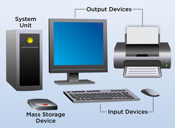

WHAT IS COMPUTER(INPUT & OUTPUT DEVICE)

A computer is a machine that can be instructed to carry out sequences of
arithmetic or logical operations automatically via computer programming.
Modern computers have the ability to follow generalized sets of operations, called programs.
These programs enable computers to perform an extremely wide range of tasks.
OUTPUT DEVICE
- Monitor
 A monitor is an electronic output device that is also known as a video display terminal (VDT) or a video display unit (VDU).
It is used to display images, text, video, and graphics information generated by a connected computer via a computer's video card.
Although it is almost like a TV, its resolution is much higher than a TV.
The first computer monitor was introduced on 1 March 1973, which was part of the Xerox Alto computer system.
A monitor is an electronic output device that is also known as a video display terminal (VDT) or a video display unit (VDU).
It is used to display images, text, video, and graphics information generated by a connected computer via a computer's video card.
Although it is almost like a TV, its resolution is much higher than a TV.
The first computer monitor was introduced on 1 March 1973, which was part of the Xerox Alto computer system.
- Printer
 A printer is an output device that prints paper documents. This includes text documents,
images, or a combination of both. The two most common types of printers are inkjet and laser printers.
Inkjet printers are commonly used by consumers, while laser printers are a typical choice for businesses. Dot matrix printers,
which have become increasingly rare, are still used for basic text printing.
A printer is an output device that prints paper documents. This includes text documents,
images, or a combination of both. The two most common types of printers are inkjet and laser printers.
Inkjet printers are commonly used by consumers, while laser printers are a typical choice for businesses. Dot matrix printers,
which have become increasingly rare, are still used for basic text printing.
- Plotter
A plotter is a computer hardware device much like a printer that is used for printing vector graphics.
Instead of toner, plotters use a pen, pencil,
marker, or another writing tool to draw multiple, continuous lines onto paper rather
than a series of dots like a traditional printer. Though once widely used for computer-aided design,
these devices have more or less been phased out by wide-format printers.
Plotters produce a hard copy of schematics and other similar applications.
- Speaker
A loudspeaker is an electroacoustic transducer; a device which converts an electrical audio signal into a corresponding sound.
The most widely used type of speaker is the dynamic speaker.
The sound source must be amplified or strengthened with an audio power amplifier before the signal is sent to the speaker.
- INPUT DEVICE
In computing, an input device is a piece of equipment used to provide data and control signals to
an information processing system such as a computer or information appliance.
Examples of input devices include keyboards, mouse, scanners, cameras, joysticks, and microphones.
- Keyboard
A computer keyboard is an input device that allows a person to enter letters, numbers, and other symbols
(these are called characters in a keyboard) into a computer. It is one of the most used input devices for computers.
... A keyboard contains many mechanical switches or push-buttons called "keys".
- Mouse
 A computer mouse is a hand-held pointing device that detects two-dimensional motion relative to a surface.
This motion is typically translated into the motion of a pointer on a display,
which allows a smooth control of the graphical user interface of a computer.
A computer mouse is a hand-held pointing device that detects two-dimensional motion relative to a surface.
This motion is typically translated into the motion of a pointer on a display,
which allows a smooth control of the graphical user interface of a computer.
- Microphone
A microphone, colloquially called a mic or mike (/maɪk/), is a device – a transducer – that converts sound into an electrical signal.
... Several types of microphone are used today,
which employ different methods to convert the air pressure variations of a sound wave to an electrical signal.
- Joystick
 A joystick is an input device consisting of a stick that pivots on a base and reports its angle or direction to the device
it is controlling. A joystick, also known as the control column,
is the principal control device in the cockpit of many civilian and military aircraft, either as a centre stick or side-stick.
A joystick is an input device consisting of a stick that pivots on a base and reports its angle or direction to the device
it is controlling. A joystick, also known as the control column,
is the principal control device in the cockpit of many civilian and military aircraft, either as a centre stick or side-stick.